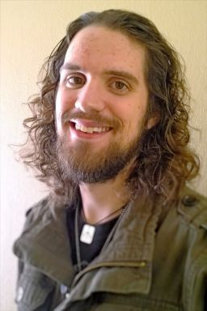

| Back To Home Page |  |
Height: 6'4" Weight: 185 lbs Hair: Brown Eyes: Brown Age: 24 Shoe: 16 US
By the grace of God, I'm married to my beautiful wife,
Lindsay Elizabeth Walton. I've also been fortunate enough
to become employed by The Boeing Company, and to continue
my education at Oklahoma Christian University.
Currently, My wife and I attend church at Britton Christian Church, where I am a member of the Education Committee. Lindsay sings with the choir.
At Boeing,
I am a Student Engineer. Basically, this means that I have to be
enrolled in courses constantly until I finish my degree. Once I finish, I'll
be promoted to a full-fledged Software Engineer!
I am a member of the ASC2 (Aircraft Surveillance,Command, and Control), and I
help program the Primary AWACS Display in Java using the Eclipse IDE and a whole
slew of other software tools.
Education is one of the most important things in the world. I've devoted a lot of
time to the pursuit of knowledge. I have my B.A. in Bible and Ministry with a
minor in Biblical Languages from
Oklahoma Christian University.
Combined, I have 30 hours in Greek, Hebrew, Linguistics, and Philology. I absolutely loved it.
Of course, I learned quickly that there isn't much money in ministry. I wanted to better support
my family, so I decided to continue going to OC, where I took a year and a half of Computer
Engineering courses before I jumped ship to Computer Science where I could set my sights on my
Master's and on programming.